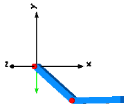


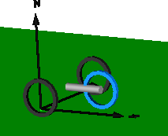
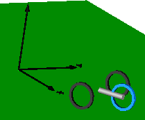


This package contains elementary example models to demonstrate the usage of the MultiBody library
| Model | Description |
|---|---|
| DoublePendulum | Simple double pendulum with two revolute joints and two bodies. 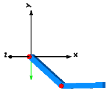 |
| ForceAndTorque | Demonstrates usage of Forces.ForceAndTorque element.
|
| FreeBody | Free flying body attached by two springs to environment.
|
| InitSpringConstant | Determine spring constant such that system is in steady state
at given position.
|
| LineForceWithTwoMasses | Demonstrates a line force with two point masses using a
Joints.Assemblies.JointUPS and alternatively a
Forces.LineForceWithTwoMasses component.
|
| Pendulum | Simple pendulum with one revolute joint and one body.
|
| PendulumWithSpringDamper | Simple spring/damper/mass system
|
| PointGravity | Two bodies in a point gravity field
|
| PointGravityWithPointMasses | Two point masses in a point gravity field (rotation of bodies is neglected)
|
| PointGravityWithPointMasses2 | Rigidly connected point masses in a point gravity field
|
| RollingWheel | Single wheel rolling on ground starting from an initial speed
|
| RollingWheelSetDriving | Rolling wheel set that is driven by torques driving the wheels 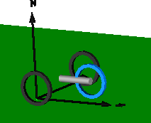 |
| RollingWheelSetPulling | Rolling wheel set that is pulled by a force 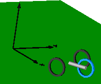 |
| SpringDamperSystem | Spring/damper system with a prismatic joint and
attached on free flying body
|
| SpringMassSystem | Mass attached via a prismatic joint and a spring to the world frame
|
| SpringWithMass | Point mass hanging on a spring
|
| ThreeSprings | 3-dimensional springs in series and parallel connection
|
| HeatLosses | Demonstrate the modeling of heat losses. |
| UserDefinedGravityField | Demonstrate the modeling of a user-defined gravity field. |
| Surfaces | Demonstrate the visualization of a sine surface,
as well as a torus and a wheel constucted from a surface
|
Extends from Modelica.Icons.ExamplesPackage (Icon for packages containing runnable examples).
| Name | Description |
|---|---|
| Simple double pendulum with two revolute joints and two bodies | |
| Demonstrate how to initialize a double pendulum so that its tip starts at a predefined position | |
| Demonstrate usage of ForceAndTorque element | |
| Free flying body attached by two springs to environment | |
| Determine spring constant such that system is in steady state at given position | |
| Demonstrate line force with two point masses using a JointUPS and alternatively a LineForceWithTwoMasses component | |
| Simple pendulum with one revolute joint and one body | |
| Simple spring/damper/mass system | |
| Two point masses in a point gravity field | |
| Two point masses in a point gravity field (rotation of bodies is neglected) | |
| Rigidly connected point masses in a point gravity field | |
| Simple spring/damper/mass system | |
| Mass attached with a spring to the world frame | |
| Point mass hanging on a spring | |
| 3-dim. springs in series and parallel connection | |
| Single wheel rolling on ground starting from an initial speed | |
| Rolling wheel set that is driven by torques driving the wheels | |
| Rolling wheel set that is pulled by a force | |
| Demonstrate the modeling of heat losses | |
| Demonstrate the modeling of a user-defined gravity field | |
| Demonstrate the visualization of a sine surface, as well as a torus and a wheel constucted from a surface | |
| Utility models and functions used by MultiBody.Examples.Elementary |
 Modelica.Mechanics.MultiBody.Examples.Elementary.DoublePendulum
Modelica.Mechanics.MultiBody.Examples.Elementary.DoublePendulum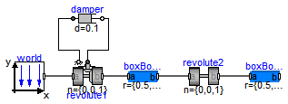
This example demonstrates that by using joint and body elements animation is automatically available. Also the revolute joints are animated. Note, that animation of every component can be switched of by setting the first parameter animation to false or by setting enableAnimation in the world object to false to switch off animation of all components.

|
Extends from Modelica.Icons.Example (Icon for runnable examples).
model DoublePendulum "Simple double pendulum with two revolute joints and two bodies" extends Modelica.Icons.Example;inner Modelica.Mechanics.MultiBody.World world; Modelica.Mechanics.MultiBody.Joints.Revolute revolute1(useAxisFlange=true,phi(fixed=true), w(fixed=true)); Modelica.Mechanics.Rotational.Components.Damper damper( d=0.1); Modelica.Mechanics.MultiBody.Parts.BodyBox boxBody1(r={0.5,0,0}, width=0.06); Modelica.Mechanics.MultiBody.Joints.Revolute revolute2(phi(fixed=true), w( fixed=true)); Modelica.Mechanics.MultiBody.Parts.BodyBox boxBody2(r={0.5,0,0}, width=0.06); equationconnect(damper.flange_b, revolute1.axis); connect(revolute1.support, damper.flange_a); connect(revolute1.frame_b, boxBody1.frame_a); connect(revolute2.frame_b, boxBody2.frame_a); connect(boxBody1.frame_b, revolute2.frame_a); connect(world.frame_b, revolute1.frame_a); end DoublePendulum;
Modelica.Mechanics.MultiBody.Examples.Elementary.DoublePendulumInitTip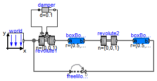
This example demonstrates at hand of a double pendulum, how no-standard initialization can be defined: The absolute position of the pendulum tip, and its absolute speed shall be initially defined. This can be performed with the Joints.FreeMotionScalarInit joint that allows to initialize individual elements of its relative vectors. In this case, the x-, and y-coordinates of the relative position vector (visualized by the yellow arrow in the figure below) and of its derivative shall have a defined value at initial time. The configuration of the double pendulum at the initial time is shown below, where the tip position is required to have the coordinates x=0.7, y=0.3.
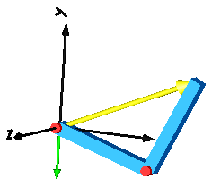
Extends from Modelica.Icons.Example (Icon for runnable examples).
model DoublePendulumInitTip "Demonstrate how to initialize a double pendulum so that its tip starts at a predefined position" extends Modelica.Icons.Example;inner World world; Joints.Revolute revolute1( useAxisFlange=true); Rotational.Components.Damper damper( d=0.1); Parts.BodyBox boxBody1( r={0.5,0,0}, width=0.06); Joints.Revolute revolute2; Parts.BodyBox boxBody2( r={0.5,0,0}, width=0.06); Modelica.Mechanics.MultiBody.Joints.FreeMotionScalarInit freeMotionScalarInit( use_r=true, r_rel_a_1(start=0.7, fixed=true), r_rel_a_2(start=0.3, fixed=true), use_v=true, v_rel_a_1(fixed=true), v_rel_a_2(fixed=true)); equationconnect(damper.flange_b,revolute1. axis); connect(revolute1.support,damper. flange_a); connect(revolute1.frame_b,boxBody1. frame_a); connect(revolute2.frame_b,boxBody2. frame_a); connect(boxBody1.frame_b,revolute2. frame_a); connect(world.frame_b,revolute1. frame_a); connect(world.frame_b, freeMotionScalarInit.frame_a); connect(freeMotionScalarInit.frame_b, boxBody2.frame_b); end DoublePendulumInitTip;
Modelica.Mechanics.MultiBody.Examples.Elementary.ForceAndTorque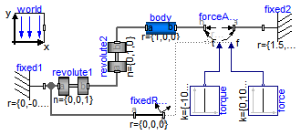
In this example the usage of the general force element "ForceAndTorque" is shown. A "ForceAndTorque" element is connected between a body and a fixed point in the world system. The force and torque is defined by the "Constant" block. The two vectors are resolved in the coordinate system defined by the "fixedRotation" component that is fixed in the world system:
The animation view at time = 0 is shown in the figure below. The yellow line is directed from frame_a to frame_b of the forceAndTorque component. The green arrow characterizes the force acting at the body whereas the green double arrow characterizes the torque acting at the body. The lengths of the two vectors are proportional to the lengths of the force and torque vectors (constant scaling factors are defined as parameters in the forceAndTorque component):

Extends from Modelica.Icons.Example (Icon for runnable examples).
model ForceAndTorque "Demonstrate usage of ForceAndTorque element" extends Modelica.Icons.Example;inner World world(animateGravity=false); Parts.BodyCylinder body(r={1,0,0}); Parts.Fixed fixed1(r={0,-0.5,0}, width=0.03); Parts.FixedRotation fixedRotation(n={0,0,1}, angle=30); Forces.ForceAndTorque forceAndTorque(Nm_to_m=120, N_to_m=1200, resolveInFrame=Modelica.Mechanics.MultiBody.Types.ResolveInFrameAB.frame_resolve); Joints.Revolute revolute2(n={0,1,0}, phi(fixed=true), w(fixed=true)); Modelica.Blocks.Sources.Constant torque[3](k={-100,100,0}); Joints.Revolute revolute1(phi(fixed=true), w(fixed=true)); Parts.Fixed fixed2(width=0.03, r={1.5,0.25,0}); Modelica.Blocks.Sources.Constant force[3](k={0,1000,0}); equationconnect(revolute2.frame_b, body.frame_a); connect(forceAndTorque.frame_b, body.frame_b); connect(fixed1.frame_b, revolute1.frame_a); connect(revolute1.frame_b, revolute2.frame_a); connect(fixed2.frame_b, forceAndTorque.frame_a); connect(fixedRotation.frame_a, fixed1.frame_b); connect(forceAndTorque.frame_resolve, fixedRotation.frame_b); connect(force.y, forceAndTorque.force); connect(torque.y, forceAndTorque.torque); end ForceAndTorque;
Modelica.Mechanics.MultiBody.Examples.Elementary.FreeBody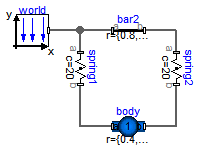
This example demonstrates:

Extends from Modelica.Icons.Example (Icon for runnable examples).
| Type | Name | Default | Description |
|---|---|---|---|
| Boolean | animation | true | = true, if animation shall be enabled |
model FreeBody "Free flying body attached by two springs to environment" extends Modelica.Icons.Example; parameter Boolean animation=true "= true, if animation shall be enabled";inner Modelica.Mechanics.MultiBody.World world; Modelica.Mechanics.MultiBody.Parts.FixedTranslation bar2(r={0.8,0,0}, animation=false); Modelica.Mechanics.MultiBody.Forces.Spring spring1( width=0.1, coilWidth=0.005, numberOfWindings=5, c=20, s_unstretched=0); Modelica.Mechanics.MultiBody.Parts.BodyShape body( m=1, I_11=1, I_22=1, I_33=1, r={0.4,0,0}, r_CM={0.2,0,0}, width=0.05, r_0(start={0.2,-0.5,0.1}, fixed=true), v_0(fixed=true), angles_fixed=true, w_0_fixed=true, angles_start={0.174532925199433,0.174532925199433,0.174532925199433}); Modelica.Mechanics.MultiBody.Forces.Spring spring2( c=20, s_unstretched=0, width=0.1, coilWidth=0.005, numberOfWindings=5); equationconnect(bar2.frame_a, world.frame_b); connect(spring1.frame_b, body.frame_a); connect(bar2.frame_b, spring2.frame_a); connect(spring1.frame_a, world.frame_b); connect(body.frame_b, spring2.frame_b); end FreeBody;
Modelica.Mechanics.MultiBody.Examples.Elementary.InitSpringConstant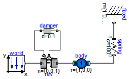
This example demonstrates a non-standard type of initialization by calculating a spring constant such that a simple pendulum is at a defined position in steady state.
The goal is that the pendulum should be in steady state when the rotation angle of the pendulum is zero. The spring constant of the spring shall be calculated during initialization such that this goal is reached.
The pendulum has one degree of freedom, i.e., two states. Therefore, two additional equations have to be provided for initialization. However, parameter "c" of the spring component is defined with attribute "fixed = false", i.e., the value of this parameter is computed during initialization. Therefore, there is one additional equation required during initialization. The 3 initial equations are the rotational angle of the revolute joint and its first and second derivative. The latter ones are zero, in order to initialize in steady state. By setting the start values of phi, w, a to zero and their fixed attributes to true, the required 3 initial equations are defined.
After translation, this model is initialized in steady-state. The spring constant is computed as c = 49.05 N/m. An animation of this simulation is shown in the figure below.

Extends from Modelica.Icons.Example (Icon for runnable examples).
model InitSpringConstant "Determine spring constant such that system is in steady state at given position" extends Modelica.Icons.Example;inner Modelica.Mechanics.MultiBody.World world(gravityType=Modelica.Mechanics.MultiBody.Types.GravityTypes. UniformGravity); Modelica.Mechanics.MultiBody.Joints.Revolute rev(useAxisFlange=true,n={0,0,1}, phi(fixed=true), w(fixed=true), a(fixed=true)); Modelica.Mechanics.Rotational.Components.Damper damper( d=0.1); Modelica.Mechanics.MultiBody.Parts.BodyShape body( r={1,0,0}, r_CM={0.5,0,0}, m=1); Modelica.Mechanics.MultiBody.Parts.Fixed fixed(r={1,0.2,0}, width=0.02); Modelica.Mechanics.MultiBody.Forces.Spring spring(s_unstretched=0.1, c(fixed=false) = 100); equationconnect(world.frame_b, rev.frame_a); connect(damper.flange_b, rev.axis); connect(rev.support, damper.flange_a); connect(rev.frame_b, body.frame_a); connect(fixed.frame_b, spring.frame_a); connect(body.frame_b, spring.frame_b); end InitSpringConstant;
Modelica.Mechanics.MultiBody.Examples.Elementary.LineForceWithTwoMasses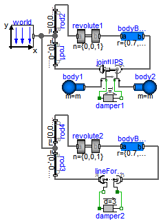
It is demonstrated how to implement line force components that shall have mass properties. Two alternative implementations are given:
In both cases, a linear 1-dimensional translational damper from the Modelica.Mechanics.Translational library is used as line force between the two attachment points. Simulate this system and plot the differences of the cut forces at both sides of the line force component ("rod_f_diff" and "body_f_diff"). Both vectors should be zero (depending on the choosen relative tolerance of the integration, the difference is in the order of 1.e-10 ... 1.e-15).
Note, that the implementation with the LineForceWithTwoMasses component is simpler and more convenient. An animation of this simulation is shown in the figure below. The system on the left side in the front is the animation with the LineForceWithTwoMasses component whereas the system on the right side in the back is the animation with the JointUPS component.

Extends from Modelica.Icons.Example (Icon for runnable examples).
| Type | Name | Default | Description |
|---|---|---|---|
| Mass | m | 1 | Mass of point masses [kg] |
model LineForceWithTwoMasses
"Demonstrate line force with two point masses using a JointUPS and alternatively a LineForceWithTwoMasses component"
import SI = Modelica.SIunits;
extends Modelica.Icons.Example;
parameter Modelica.SIunits.Mass m=1 "Mass of point masses";
SI.Force rod_f_diff[3]=rod1.frame_b.f - rod3.frame_b.f
"Difference of cut-forces in rod1 and rod3";
SI.Force body_f_diff[3]=bodyBox1.frame_b.f - bodyBox2.frame_b.f
"Difference of cut-forces in bodyBox1 and bodyBox2";
inner Modelica.Mechanics.MultiBody.World world;
Modelica.Mechanics.MultiBody.Joints.Revolute revolute1(phi(fixed=true), w(
fixed=true));
Modelica.Mechanics.MultiBody.Parts.BodyBox bodyBox1(r={0.7,0,0});
Modelica.Mechanics.MultiBody.Parts.FixedTranslation rod1(
r={0,-0.9,0},
width=0.01,
animation=false);
Modelica.Mechanics.MultiBody.Joints.Assemblies.JointUPS jointUPS(nAxis_ia={0.7,1.2,0}, animation=
true);
Modelica.Mechanics.MultiBody.Parts.Body body1(
r_CM=0.2*jointUPS.eAxis_ia,
cylinderDiameter=0.05,
animation=true,
m=m,
I_11=0,
I_22=0,
I_33=0);
Modelica.Mechanics.MultiBody.Parts.Body body2(
r_CM=-0.2*jointUPS.eAxis_ia,
cylinderDiameter=0.05,
animation=true,
m=m,
I_11=0,
I_22=0,
I_33=0);
Modelica.Mechanics.MultiBody.Parts.FixedTranslation rod2(
r={0,0.3,0},
width=0.01,
animation=false);
Modelica.Mechanics.Translational.Components.Damper damper1(
d=3);
Modelica.Mechanics.MultiBody.Joints.Revolute revolute2(phi(fixed=true), w(
fixed=true));
Modelica.Mechanics.MultiBody.Parts.BodyBox bodyBox2(r={0.7,0,0});
Modelica.Mechanics.MultiBody.Parts.FixedTranslation rod3(
width=0.01,
r={0,-0.9,0.3},
animation=false);
Modelica.Mechanics.MultiBody.Parts.FixedTranslation rod4(
width=0.01,
r={0,0.3,0.3},
animation=false);
Modelica.Mechanics.Translational.Components.Damper damper2(
d=3);
Modelica.Mechanics.MultiBody.Forces.LineForceWithTwoMasses
lineForceWithTwoMasses(
L_a=0.2,
L_b=0.2,
cylinderLength_a=0.2,
cylinderLength_b=1.2,
massDiameterFaction=2.2,
m_a=m,
m_b=m);
equation
connect(jointUPS.bearing, damper1.flange_a);
connect(jointUPS.axis, damper1.flange_b);
connect(jointUPS.frame_ib, body2.frame_a);
connect(world.frame_b, rod2.frame_a);
connect(world.frame_b, rod1.frame_a);
connect(rod2.frame_b, revolute1.frame_a);
connect(revolute1.frame_b, bodyBox1.frame_a);
connect(bodyBox1.frame_b, jointUPS.frame_b);
connect(body1.frame_a, jointUPS.frame_ia);
connect(rod1.frame_b, jointUPS.frame_a);
connect(rod4.frame_b, revolute2.frame_a);
connect(revolute2.frame_b, bodyBox2.frame_a);
connect(world.frame_b, rod4.frame_a);
connect(rod3.frame_a, rod4.frame_a);
connect(lineForceWithTwoMasses.frame_a, rod3.frame_b);
connect(lineForceWithTwoMasses.frame_b, bodyBox2.frame_b);
connect(lineForceWithTwoMasses.flange_b, damper2.flange_b);
connect(lineForceWithTwoMasses.flange_a, damper2.flange_a);
end LineForceWithTwoMasses;
Modelica.Mechanics.MultiBody.Examples.Elementary.Pendulum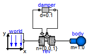
This simple model demonstrates that by just dragging components
default animation is defined that shows the structure of the
assembled system.

Extends from Modelica.Icons.Example (Icon for runnable examples).
model Pendulum "Simple pendulum with one revolute joint and one body" extends Modelica.Icons.Example;inner Modelica.Mechanics.MultiBody.World world(gravityType=Modelica.Mechanics.MultiBody.Types.GravityTypes. UniformGravity); Modelica.Mechanics.MultiBody.Joints.Revolute rev(n={0,0,1},useAxisFlange=true, phi(fixed=true), w(fixed=true)); Modelica.Mechanics.Rotational.Components.Damper damper( d=0.1); Modelica.Mechanics.MultiBody.Parts.Body body(m=1.0, r_CM={0.5,0,0}); equationconnect(world.frame_b, rev.frame_a); connect(damper.flange_b, rev.axis); connect(rev.support, damper.flange_a); connect(body.frame_a, rev.frame_b); end Pendulum;
Modelica.Mechanics.MultiBody.Examples.Elementary.PendulumWithSpringDamper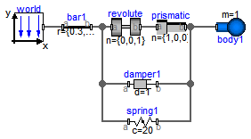
A body is attached on a revolute and prismatic joint. A 3-dim. spring and a 3-dim. damper are connected between the body and a point fixed in the world frame:

Extends from Modelica.Icons.Example (Icon for runnable examples).
| Type | Name | Default | Description |
|---|---|---|---|
| Boolean | animation | true | = true, if animation shall be enabled |
model PendulumWithSpringDamper "Simple spring/damper/mass system" extends Modelica.Icons.Example; parameter Boolean animation=true "= true, if animation shall be enabled";inner Modelica.Mechanics.MultiBody.World world(axisLength=0.6); Modelica.Mechanics.MultiBody.Parts.Body body1( m=1, animation=animation, I_11=1, I_22=1, I_33=1, r_CM={0,0,0}, cylinderDiameter=0.05, sphereDiameter=0.2); Modelica.Mechanics.MultiBody.Parts.FixedTranslation bar1(animation=animation, r={0.3,0,0}); Modelica.Mechanics.MultiBody.Forces.Spring spring1( coilWidth=0.01, numberOfWindings=5, c=20, s_unstretched=0.2); Modelica.Mechanics.MultiBody.Forces.Damper damper1( d=1, length_a=0.1, diameter_a=0.08, animation=false); Modelica.Mechanics.MultiBody.Joints.Revolute revolute(phi(fixed=true), w( fixed=true)); Modelica.Mechanics.MultiBody.Joints.Prismatic prismatic( boxWidth=0.04, boxColor={255,65,65}, s(fixed=true, start=0.5), v(fixed=true)); equationconnect(world.frame_b, bar1.frame_a); connect(revolute.frame_a, bar1.frame_b); connect(prismatic.frame_a, revolute.frame_b); connect(damper1.frame_a, bar1.frame_b); connect(damper1.frame_b, prismatic.frame_b); connect(spring1.frame_a, bar1.frame_b); connect(spring1.frame_b, prismatic.frame_b); connect(body1.frame_a, prismatic.frame_b); end PendulumWithSpringDamper;
Modelica.Mechanics.MultiBody.Examples.Elementary.PointGravity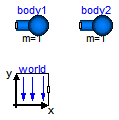
This model demonstrates a point gravity field. Two bodies are placed in the gravity field. The initial positions and velocities of these bodies are selected such that one body rotates on a circle and the other body rotates on an ellipse around the center of the point gravity field.

Extends from Modelica.Icons.Example (Icon for runnable examples).
model PointGravity "Two point masses in a point gravity field" import SI = Modelica.SIunits; extends Modelica.Icons.Example;inner Modelica.Mechanics.MultiBody.World world( mue=1, gravitySphereDiameter=0.1, gravityType=Modelica.Mechanics.MultiBody.Types.GravityTypes.PointGravity); Modelica.Mechanics.MultiBody.Parts.Body body1( m=1, sphereDiameter=0.1, I_11=0.1, I_22=0.1, I_33=0.1, r_0(start={0,0.6,0}, fixed=true), v_0(start={1,0,0}, fixed=true), angles_fixed=true, w_0_fixed=true, r_CM={0,0,0}); Modelica.Mechanics.MultiBody.Parts.Body body2( m=1, sphereDiameter=0.1, I_11=0.1, I_22=0.1, I_33=0.1, r_0(start={0.6,0.6,0}, fixed=true), v_0(start={0.6,0,0}, fixed=true), angles_fixed=true, w_0_fixed=true, r_CM={0,0,0}); equationend PointGravity;
Modelica.Mechanics.MultiBody.Examples.Elementary.PointGravityWithPointMasses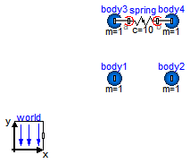
This model demonstrates the usage of model Parts.PointMass in a point gravity field. The PointMass model has the feature that that rotation is not taken into account and can therefore also not be calculated. This example demonstrates two cases where this does not matter: If a PointMass is not connected (body1, body2), the orientation object in these point masses is set to a unit rotation. If a PointMass is connected by a line force element, such as the used Forces.LineForceWithMass component, then the orientation object is set to a unit rotation within the line force element. These are the two cases where the rotation is automatically set to a default value, when the physical system does not provide the equations.

Extends from Modelica.Icons.Example (Icon for runnable examples).
model PointGravityWithPointMasses "Two point masses in a point gravity field (rotation of bodies is neglected)" import SI = Modelica.SIunits; extends Modelica.Icons.Example;inner Modelica.Mechanics.MultiBody.World world( mue=1, gravitySphereDiameter=0.1, gravityType=Modelica.Mechanics.MultiBody.Types.GravityTypes.PointGravity); Modelica.Mechanics.MultiBody.Parts.PointMass body1( m=1, sphereDiameter=0.1, r_0(start={0,0.6,0}, fixed=true), v_0(start={1,0,0}, fixed=true)); Modelica.Mechanics.MultiBody.Parts.PointMass body2( m=1, sphereDiameter=0.1, r_0(start={0.6,0.6,0}, fixed=true), v_0(start={0.6,0,0}, fixed=true)); Modelica.Mechanics.MultiBody.Parts.PointMass body3( m=1, sphereDiameter=0.1, r_0(start={0,0.8,0}, fixed=true), v_0(start={0.6,0,0}, fixed=true)); Modelica.Mechanics.MultiBody.Parts.PointMass body4( m=1, sphereDiameter=0.1, r_0(start={0.3,0.8,0}, fixed=true), v_0(start={0.6,0,0}, fixed=true)); Forces.Spring spring(showMass=false, c=10, fixedRotationAtFrame_b=true, fixedRotationAtFrame_a=true); equationconnect(spring.frame_a, body3.frame_a); connect(spring.frame_b, body4.frame_a); end PointGravityWithPointMasses;
Modelica.Mechanics.MultiBody.Examples.Elementary.PointGravityWithPointMasses2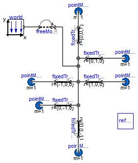
This model demonstrates the usage of model Parts.PointMass in a point gravity field. 6 point masses are connected rigidly together. Translating such a model results in an error, because point masses do not define an orientation object. The example demonstrates that in such a case (when the orientation object is not defined by an object that is connected to a point mass), a "MultiBody.Joints.FreeMotion" joint has to be used, to define the the degrees of freedom of this structure.
In order to demonstrate that this approach is correct, in model "referenceSystem", the same system is again provided, but this time modeled with a generic body (Parts.Body) where the inertia tensor is set to zero. In this case, no FreeMotion object is needed because every body provides its absolute translational and rotational position and velocity as potential states.
The two systems should move exactly in the same way. The system with the PointMasses
object visulizes the point masses in "red", whereas the "referenceSystem" shows
its bodies in "blue".

Extends from Modelica.Icons.Example (Icon for runnable examples).
model PointGravityWithPointMasses2
"Rigidly connected point masses in a point gravity field"
extends Modelica.Icons.Example;
model PointMass = Modelica.Mechanics.MultiBody.Parts.PointMass (m=1, sphereColor={
255,0,0}) "Point mass used at all places of this example";
PointMass pointMass1(r_0(start={3,0,0}, fixed=true), v_0(start={0,0,-1},
fixed=true));
PointMass pointMass2;
PointMass pointMass3(r_0(start={2,1,0}, fixed=true), v_0(start={0,0,-1},
fixed=true));
PointMass pointMass4;
PointMass pointMass5;
PointMass pointMass6;
Modelica.Mechanics.MultiBody.Parts.FixedTranslation fixedTranslation(r={1,0,0});
Modelica.Mechanics.MultiBody.Parts.FixedTranslation fixedTranslation1(r={-1,0,0});
Modelica.Mechanics.MultiBody.Parts.FixedTranslation fixedTranslation2(r={0,1,0});
Modelica.Mechanics.MultiBody.Parts.FixedTranslation fixedTranslation3(r={0,-1,0});
Modelica.Mechanics.MultiBody.Parts.FixedTranslation fixedTranslation4(r={0,0,1});
Modelica.Mechanics.MultiBody.Parts.FixedTranslation fixedTranslation5(r={0,0,-1});
inner World world( gravityType=Modelica.Mechanics.MultiBody.Types.GravityTypes.PointGravity, mue=
5);
Joints.FreeMotion freeMotion;
model SystemWithStandardBodies
"For comparison purposes, an equivalent model with Bodies instead of PointMasses"
model PointMass = Modelica.Mechanics.MultiBody.Parts.Body(m=1,I_11=0,I_22=0,I_33=0)
"Body used all places of the comparision model with zero inertia tensor";
PointMass pointMass1(
r_0(start={3,0,0}, fixed=true),
v_0(start={0,0,-1}, fixed=true),
angles_fixed=true,
w_0_fixed=true,
r_CM={0,0,0});
PointMass pointMass2(r_CM={0,0,0});
PointMass pointMass3(r_CM={0,0,0});
PointMass pointMass4(r_CM={0,0,0});
PointMass pointMass5(r_CM={0,0,0});
PointMass pointMass6(r_CM={0,0,0});
Modelica.Mechanics.MultiBody.Parts.FixedTranslation fixedTranslation( r={1,0,0});
Modelica.Mechanics.MultiBody.Parts.FixedTranslation fixedTranslation1( r={-1,0,0});
Modelica.Mechanics.MultiBody.Parts.FixedTranslation fixedTranslation2( r={0,1,0});
Modelica.Mechanics.MultiBody.Parts.FixedTranslation fixedTranslation3( r={0,-1,0});
Modelica.Mechanics.MultiBody.Parts.FixedTranslation fixedTranslation4( r={0,0,1});
Modelica.Mechanics.MultiBody.Parts.FixedTranslation fixedTranslation5( r={0,0,-1});
equation
connect(fixedTranslation1.frame_a, fixedTranslation.frame_a);
connect(fixedTranslation1.frame_a, fixedTranslation2.frame_a);
connect(fixedTranslation3.frame_a, fixedTranslation.frame_a);
connect(fixedTranslation1.frame_a, fixedTranslation4.frame_a);
connect(fixedTranslation5.frame_a, fixedTranslation.frame_a);
connect(fixedTranslation2.frame_b, pointMass3.frame_a);
connect(fixedTranslation3.frame_b, pointMass4.frame_a);
connect(pointMass5.frame_a, fixedTranslation4.frame_b);
connect(fixedTranslation5.frame_b, pointMass6.frame_a);
connect(fixedTranslation.frame_b, pointMass1.frame_a);
connect(fixedTranslation1.frame_b, pointMass2.frame_a);
end SystemWithStandardBodies ;
SystemWithStandardBodies referenceSystem;
equation
connect(fixedTranslation1.frame_a, fixedTranslation.frame_a);
connect(fixedTranslation1.frame_a, fixedTranslation2.frame_a);
connect(fixedTranslation3.frame_a, fixedTranslation.frame_a);
connect(fixedTranslation1.frame_a, fixedTranslation4.frame_a);
connect(fixedTranslation5.frame_a, fixedTranslation.frame_a);
connect(fixedTranslation2.frame_b, pointMass3.frame_a);
connect(fixedTranslation3.frame_b, pointMass4.frame_a);
connect(pointMass5.frame_a, fixedTranslation4.frame_b);
connect(fixedTranslation5.frame_b, pointMass6.frame_a);
connect(fixedTranslation.frame_b, pointMass1.frame_a);
connect(fixedTranslation1.frame_b, pointMass2.frame_a);
connect(world.frame_b, freeMotion.frame_a);
connect(freeMotion.frame_b, fixedTranslation1.frame_a);
end PointGravityWithPointMasses2;
Modelica.Mechanics.MultiBody.Examples.Elementary.SpringDamperSystem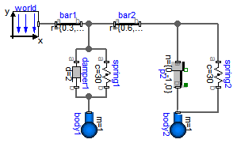
This example demonstrates:

Extends from Modelica.Icons.Example (Icon for runnable examples).
| Type | Name | Default | Description |
|---|---|---|---|
| Boolean | animation | true | = true, if animation shall be enabled |
model SpringDamperSystem "Simple spring/damper/mass system" extends Modelica.Icons.Example; parameter Boolean animation=true "= true, if animation shall be enabled";inner Modelica.Mechanics.MultiBody.World world; Modelica.Mechanics.MultiBody.Parts.Body body1( m=1, animation=animation, r_CM={0,-0.2,0}, cylinderDiameter=0.05, sphereDiameter=0.15, I_11=0.1, I_22=0.1, I_33=0.1, r_0(start={0.3,-0.2,0}, fixed=true), v_0(fixed=true), angles_fixed=true, w_0_fixed=true, w_0_start(displayUnit="deg/s") = {0,0,0.03490658503988659}); Modelica.Mechanics.MultiBody.Parts.FixedTranslation bar1(animation=animation, r={0.3,0,0}); Modelica.Mechanics.MultiBody.Parts.FixedTranslation bar2(animation=animation, r={0.6,0,0}); Modelica.Mechanics.MultiBody.Parts.Body body2( m=1, animation=animation, cylinderDiameter=0.05, sphereDiameter=0.15, r_CM={0,0,0}); Modelica.Mechanics.MultiBody.Joints.Prismatic p2(useAxisFlange=true, n={0,-1,0}, animation=animation, boxWidth=0.05, stateSelect=StateSelect.always, v(fixed=true), s(fixed=true, start=0.1)); Modelica.Mechanics.MultiBody.Forces.Spring spring2( c=30, s_unstretched=0.1, coilWidth=0.01, width=0.1); Modelica.Mechanics.MultiBody.Forces.Spring spring1( s_unstretched=0.1, coilWidth=0.01, c=30, numberOfWindings=10, width=0.1); Modelica.Mechanics.MultiBody.Forces.Damper damper1(d=2); equationconnect(world.frame_b, bar1.frame_a); connect(bar1.frame_b, bar2.frame_a); connect(bar2.frame_b, p2.frame_a); connect(p2.frame_b, body2.frame_a); connect(bar2.frame_b, spring2.frame_a); connect(body2.frame_a, spring2.frame_b); connect(damper1.frame_a, bar1.frame_b); connect(spring1.frame_a, bar1.frame_b); connect(damper1.frame_b, body1.frame_a); connect(spring1.frame_b, body1.frame_a); end SpringDamperSystem;
Modelica.Mechanics.MultiBody.Examples.Elementary.SpringMassSystem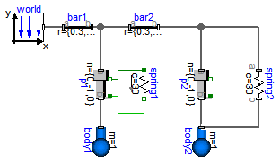
This example shows the two different ways how force laws can be utilized:

Extends from Modelica.Icons.Example (Icon for runnable examples).
| Type | Name | Default | Description |
|---|---|---|---|
| Boolean | animation | true | = true, if animation shall be enabled |
model SpringMassSystem "Mass attached with a spring to the world frame" extends Modelica.Icons.Example; parameter Boolean animation=true "= true, if animation shall be enabled";inner Modelica.Mechanics.MultiBody.World world; Modelica.Mechanics.MultiBody.Joints.Prismatic p1(useAxisFlange=true, n={0,-1,0}, animation=animation, boxWidth=0.05, s(fixed=true, start=0.1), v(fixed=true)); Modelica.Mechanics.Translational.Components.Spring spring1( c=30, s_rel0=0.1); Modelica.Mechanics.MultiBody.Parts.Body body1( m=1, sphereDiameter=0.2, animation=animation, r_CM={0,0,0}); Modelica.Mechanics.MultiBody.Parts.FixedTranslation bar1(animation=animation, r={0.3,0,0}); Modelica.Mechanics.MultiBody.Parts.FixedTranslation bar2(animation=animation, r={0.3,0,0}); Modelica.Mechanics.MultiBody.Parts.Body body2( m=1, sphereDiameter=0.2, animation=animation, r_CM={0,0,0}); Modelica.Mechanics.MultiBody.Joints.Prismatic p2(useAxisFlange=true, n={0,-1,0}, animation=animation, boxWidth=0.05, stateSelect=StateSelect.always, s(fixed=true, start=0.1), v(fixed=true)); Modelica.Mechanics.MultiBody.Forces.Spring spring2( c=30, s_unstretched=0.1, width=0.1); equationconnect(body1.frame_a, p1.frame_b); connect(world.frame_b, bar1.frame_a); connect(bar1.frame_b, p1.frame_a); connect(spring1.flange_b, p1.axis); connect(bar1.frame_b, bar2.frame_a); connect(bar2.frame_b, p2.frame_a); connect(p2.frame_b, body2.frame_a); connect(bar2.frame_b, spring2.frame_a); connect(body2.frame_a, spring2.frame_b); connect(spring1.flange_a, p1.support); end SpringMassSystem;
Modelica.Mechanics.MultiBody.Examples.Elementary.SpringWithMass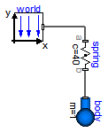
This example shows that a force component may have a mass. The 3-dimensional spring as used in this example, has an optional point mass between the two points where the spring is attached. In the animation, this point mass is represented by a small, light blue, sphere.

Extends from Modelica.Icons.Example (Icon for runnable examples).
model SpringWithMass "Point mass hanging on a spring" extends Modelica.Icons.Example;inner Modelica.Mechanics.MultiBody.World world(animateGravity=false); Modelica.Mechanics.MultiBody.Forces.Spring spring( s_unstretched=0.2, m=0.5, c=40, width=0.1, massDiameter=0.07); Modelica.Mechanics.MultiBody.Parts.Body body( r_0(start={0,-0.3,0}, fixed=true), v_0(fixed=true), angles_fixed=true, w_0_fixed=true, r_CM={0,0,0}, m=1); equationconnect(world.frame_b, spring.frame_a); connect(body.frame_a, spring.frame_b); end SpringWithMass;
Modelica.Mechanics.MultiBody.Examples.Elementary.ThreeSprings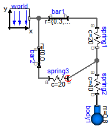
This example demonstrates that 3-dimensional line force elements (here: Modelica.Mechanics.MultiBody.Forces.Spring elements) can be connected together in series without having a body with mass at the connection point (as usually required by multi-body programs). This is advantageous since stiff systems can be avoided, say, due to a stiff spring and a small mass at the connection point.

For a more thorough explanation, see MultiBody.UsersGuide.Tutorial.ConnectionOfLineForces.
Extends from Modelica.Icons.Example (Icon for runnable examples).
| Type | Name | Default | Description |
|---|---|---|---|
| Boolean | animation | true | = true, if animation shall be enabled |
model ThreeSprings "3-dim. springs in series and parallel connection" extends Modelica.Icons.Example; parameter Boolean animation=true "= true, if animation shall be enabled";inner Modelica.Mechanics.MultiBody.World world(animateWorld=animation); Modelica.Mechanics.MultiBody.Parts.Body body1( animation=animation, r_CM={0,-0.2,0}, m=0.8, I_11=0.1, I_22=0.1, I_33=0.1, sphereDiameter=0.2, r_0(start={0.5,-0.3,0}, fixed=true), v_0(fixed=true), angles_fixed=true, w_0_fixed=true); Modelica.Mechanics.MultiBody.Parts.FixedTranslation bar1(animation=animation, r={0.3,0,0}); Modelica.Mechanics.MultiBody.Forces.Spring spring1( lineForce(r_rel_0(start={-0.2,-0.2,0.2})), s_unstretched=0.1, width=0.1, coilWidth=0.005, numberOfWindings=5, c=20, animation=animation); Modelica.Mechanics.MultiBody.Parts.FixedTranslation bar2(animation=animation, r={0,0,0.3}); Modelica.Mechanics.MultiBody.Forces.Spring spring2( s_unstretched=0.1, width=0.1, coilWidth=0.005, numberOfWindings=5, c=40, animation=animation); Modelica.Mechanics.MultiBody.Forces.Spring spring3( s_unstretched=0.1, width=0.1, coilWidth=0.005, numberOfWindings=5, c=20, animation=animation, fixedRotationAtFrame_b=true); equationconnect(world.frame_b, bar1.frame_a); connect(world.frame_b, bar2.frame_a); connect(bar1.frame_b, spring1.frame_a); connect(bar2.frame_b, spring3.frame_a); connect(spring2.frame_b, body1.frame_a); connect(spring3.frame_b, spring1.frame_b); connect(spring2.frame_a, spring1.frame_b); end ThreeSprings;
Modelica.Mechanics.MultiBody.Examples.Elementary.RollingWheel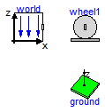
Extends from Modelica.Icons.Example (Icon for runnable examples).
model RollingWheel "Single wheel rolling on ground starting from an initial speed" extends Modelica.Icons.Example;Modelica.Mechanics.MultiBody.Parts.RollingWheel wheel1( wheelRadius=0.3, wheelMass=2, wheel_I_axis=0.06, wheel_I_long=0.12, hollowFraction=0.6, x(start=0.2), y(start=0.2), der_angles(start={0,5,1})); inner Modelica.Mechanics.MultiBody.World world(label2="z", n={0,0,-1}); Modelica.Mechanics.MultiBody.Visualizers.Ground ground(length=4); end RollingWheel;
Modelica.Mechanics.MultiBody.Examples.Elementary.RollingWheelSetDriving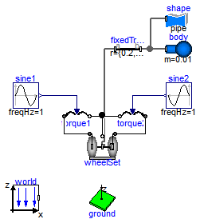
Extends from Modelica.Icons.Example (Icon for runnable examples).
model RollingWheelSetDriving "Rolling wheel set that is driven by torques driving the wheels" extends Modelica.Icons.Example;Modelica.Mechanics.MultiBody.Visualizers.Ground ground( length=3, groundColor={0,255,0}); inner Modelica.Mechanics.MultiBody.World world(label2="z", n={0,0,-1}); Modelica.Mechanics.MultiBody.Parts.RollingWheelSet wheelSet( wheelRadius=0.1, wheelMass=0.5, wheel_I_axis=0.01, wheel_I_long=0.02, wheelDistance=0.5, x(start=0.1, fixed=true), y(start=0.1, fixed=true), phi(fixed=true), theta1(fixed=true), theta2(fixed=true), der_theta1(fixed=true), der_theta2(fixed=true)); Modelica.Mechanics.MultiBody.Parts.Body body(m=0.01, r_CM={0,0,0}, animation=false); Modelica.Mechanics.MultiBody.Parts.FixedTranslation fixedTranslation( r={0.2,0,0}, animation=true, width=0.04); Modelica.Blocks.Sources.Sine sine1(freqHz=1, amplitude=2); Modelica.Blocks.Sources.Sine sine2( freqHz=1, amplitude=2, phase=1.5707963267949); Modelica.Mechanics.Rotational.Sources.Torque2 torque1; Modelica.Mechanics.Rotational.Sources.Torque2 torque2; Modelica.Mechanics.MultiBody.Visualizers.FixedShape shape( final lengthDirection={0,1,0}, final widthDirection={1,0,0}, final shapeType="pipe", final r_shape={0,-wheelSet.wheelWidth,0}, final length=2*wheelSet.wheelWidth, final width=2*wheelSet.wheelRadius, final height=2*wheelSet.wheelRadius, final color={0,128,255}, final extra=0.8); equationconnect(fixedTranslation.frame_a, wheelSet.frameMiddle); connect(fixedTranslation.frame_b, body.frame_a); connect(wheelSet.axis1, torque1.flange_a); connect(torque1.flange_b, wheelSet.support); connect(wheelSet.axis2, torque2.flange_a); connect(wheelSet.support, torque2.flange_b); connect(sine1.y, torque1.tau); connect(sine2.y, torque2.tau); connect(shape.frame_a, fixedTranslation.frame_b); end RollingWheelSetDriving;
Modelica.Mechanics.MultiBody.Examples.Elementary.RollingWheelSetPulling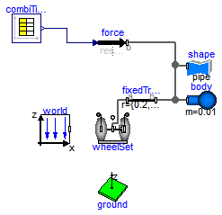
Extends from Modelica.Icons.Example (Icon for runnable examples).
model RollingWheelSetPulling "Rolling wheel set that is pulled by a force" extends Modelica.Icons.Example;Modelica.Mechanics.MultiBody.Forces.WorldForce force(animation=false); Modelica.Mechanics.MultiBody.Visualizers.Ground ground( length=3); inner Modelica.Mechanics.MultiBody.World world(label2="z", n={0,0,-1}); Modelica.Mechanics.MultiBody.Parts.RollingWheelSet wheelSet( wheelRadius=0.1, wheelMass=0.5, wheel_I_axis=0.01, wheel_I_long=0.02, wheelDistance=0.5, x(start=0.1, fixed=true), y(start=0.1, fixed=true), phi(fixed=true), theta1(fixed=true), theta2(fixed=true), der_theta1(fixed=true), der_theta2(fixed=true)); Modelica.Mechanics.MultiBody.Parts.Body body(m=0.01, r_CM={0,0,0}, animation=false); Modelica.Blocks.Sources.CombiTimeTable combiTimeTable(table=[0,1,0,0; 1,1, 0,0; 2,0,2,0; 3,0,2,0]); Modelica.Mechanics.MultiBody.Parts.FixedTranslation fixedTranslation( r={0.2,0,0}, animation=true, width=0.04); Modelica.Mechanics.MultiBody.Visualizers.FixedShape shape( final lengthDirection={0,1,0}, final widthDirection={1,0,0}, final shapeType="pipe", final r_shape={0,-wheelSet.wheelWidth,0}, final length=2*wheelSet.wheelWidth, final width=2*wheelSet.wheelRadius, final height=2*wheelSet.wheelRadius, final color={0,128,255}, final extra=0.8); equationconnect(combiTimeTable.y, force.force); connect(fixedTranslation.frame_a, wheelSet.frameMiddle); connect(fixedTranslation.frame_b, body.frame_a); connect(force.frame_b, fixedTranslation.frame_b); connect(shape.frame_a, fixedTranslation.frame_b); end RollingWheelSetPulling;
Modelica.Mechanics.MultiBody.Examples.Elementary.HeatLosses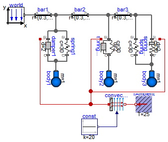
This model demonstrates how to model the dissipated power of a multi-body force element by enabling the heatPort of all components and connecting these heatPorts via a convection element to the environment. The total heat flow generated by the elements of this multi-body system and transported to the environment is present in variable convection.fluid.
Extends from Modelica.Icons.Example (Icon for runnable examples).
model HeatLosses "Demonstrate the modeling of heat losses" extends Modelica.Icons.Example;inner World world; Parts.Body body1( m=1, r_CM={0,-0.2,0}, cylinderDiameter=0.05, sphereDiameter=0.15, I_11=0.1, I_22=0.1, I_33=0.1, r_0(start={0.3,-0.2,0}, fixed=true), v_0(fixed=true), angles_fixed=true, w_0_fixed=true, w_0_start(displayUnit="deg/s") = {0,0,0.034906585039887}); Parts.FixedTranslation bar1( r={0.3,0,0}); Parts.FixedTranslation bar2(r={0.3,0,0}); Forces.Spring spring1( s_unstretched=0.1, coilWidth=0.01, c=30, numberOfWindings=10, width=0.1); Forces.Damper damper1(d=2, useHeatPort=true); Forces.SpringDamperParallel springDamper( d=2, c=30, s_unstretched=0.1, width=0.1, coilWidth=0.01, numberOfWindings=10, useHeatPort=true); Parts.Body body2( m=1, r_CM={0,-0.2,0}, cylinderDiameter=0.05, sphereDiameter=0.15, I_11=0.1, I_22=0.1, I_33=0.1, v_0(fixed=true), angles_fixed=true, w_0_fixed=true, w_0_start(displayUnit="deg/s") = {0,0,0.034906585039887}, r_0(start={0.6,-0.2,0}, fixed=true)); Parts.FixedTranslation bar3(r={0.3,0,0}); Forces.SpringDamperSeries springDamperSeries( d=2, c=30, s_unstretched=0.1, useHeatPort=true); Parts.Body body3( m=1, r_CM={0,-0.2,0}, cylinderDiameter=0.05, sphereDiameter=0.15, I_11=0.1, I_22=0.1, I_33=0.1, v_0(fixed=true), angles_fixed=true, w_0_fixed=true, w_0_start(displayUnit="deg/s") = {0,0,0.034906585039887}, r_0(start={0.9,-0.2,0}, fixed=true)); Forces.Spring spring( s_unstretched=0.2, width=0.05, c=30); Blocks.Sources.Constant const(k=20); Thermal.HeatTransfer.Components.Convection convection; Thermal.HeatTransfer.Celsius.FixedTemperature TAmbient(T=25) "Ambient temperature"; equationconnect(world.frame_b,bar1. frame_a); connect(bar1.frame_b,bar2. frame_a); connect(damper1.frame_a,bar1. frame_b); connect(spring1.frame_a,bar1. frame_b); connect(damper1.frame_b,body1. frame_a); connect(spring1.frame_b,body1. frame_a); connect(bar2.frame_b, springDamper.frame_a); connect(springDamper.frame_b, body2.frame_a); connect(bar3.frame_b, springDamperSeries.frame_a); connect(springDamperSeries.frame_b, body3.frame_a); connect(bar3.frame_a, bar2.frame_b); connect(bar3.frame_b, spring.frame_a); connect(spring.frame_b, body3.frame_a); connect(const.y,convection. Gc); connect(TAmbient.port,convection. fluid); connect(damper1.heatPort, convection.solid); connect(springDamper.heatPort, convection.solid); connect(springDamperSeries.heatPort, convection.solid); end HeatLosses;
Modelica.Mechanics.MultiBody.Examples.Elementary.UserDefinedGravityField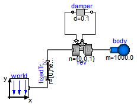
This example demonstrates a user defined gravity field. Function "world.gravityAcceleration" is redeclared to function theoreticalNormalGravityWGS84 that computes the theoretical gravity of the WGS84 ellipsoid earth model at and close to the earth ellipsoid surface. In the gravity field, a large, single pendulum is present. Via parameter "geodeticLatitude", the geodetic latitude on the earth can be defined, where the pendulum is present. The world frame is located at the WGS84 earth ellipsoid at this latitude. The result variable "gravity" is the gravity vector at the center of mass of the pendulum mass. Since the height of this mass is changing, the value of the gravity is also changing (the difference is in the order of 0.00001).
The result of the simulation is slightly different at the equator (geodeticLatitude=0) and at the poles (geodeticLatitude=90). For example, after 10 s of simulation time the rotation angle of the pendulum, rev.phi, has the following values:
| latitude [deg] | rev.phi [rad] |
| = 0 | = -2.39 rad |
| = 90 | = -2.42 rad |
Extends from Modelica.Icons.Example (Icon for runnable examples).
| Type | Name | Default | Description |
|---|---|---|---|
| Angle_deg | geodeticLatitude | 0 | Geodetic latitude [deg] |
| Position | height | 20 | Height of pendulum attachment point over WGS84 earth ellipsoid [m] |
model UserDefinedGravityField
"Demonstrate the modeling of a user-defined gravity field"
extends Modelica.Icons.Example;
parameter Modelica.SIunits.Conversions.NonSIunits.Angle_deg geodeticLatitude = 0
"Geodetic latitude";
parameter Modelica.SIunits.Position height = 20
"Height of pendulum attachment point over WGS84 earth ellipsoid";
Modelica.SIunits.Acceleration gravity[3]=body.g_0
"Gravity acceleration at center of mass of body";
inner Modelica.Mechanics.MultiBody.World world(
gravityType=Modelica.Mechanics.MultiBody.Types.GravityTypes.NoGravity,
redeclare function gravityAcceleration =
Modelica.Mechanics.MultiBody.Examples.Elementary.Utilities.theoreticalNormalGravityWGS84
(mue=1, phi=geodeticLatitude),
axisLength=10,
nominalLength=10);
Joints.Revolute rev(n={0,0,1},useAxisFlange=true,
phi(fixed=true),
w(fixed=true));
Rotational.Components.Damper damper(d=0.1);
Parts.Body body(r_CM={10,0,0},
m=1000.0,
sphereDiameter=1);
Parts.FixedTranslation fixedTranslation(r={0,height,0}, width=0.3);
equation
connect(damper.flange_b,rev. axis);
connect(rev.support,damper. flange_a);
connect(body.frame_a,rev. frame_b);
connect(world.frame_b, fixedTranslation.frame_a);
connect(fixedTranslation.frame_b, rev.frame_a);
end UserDefinedGravityField;
Modelica.Mechanics.MultiBody.Examples.Elementary.Surfaces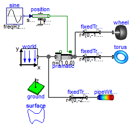
This example demonstrates the use of the Surface visualizer that visualizes a moving, parameterized surface. The "sine-wave" surface is a direct application of the surface model. Furthermore, the "torus" surface is an instance of Torus, the "wheel" surface is an instance of VoluminousWheel, and the "pipeWithScalarField surface is an instance of PipeWithScalarField. All latter visual shapes are constructed with the surface model. The following image shows a screen-shot of this example model:
Extends from Modelica.Icons.Example (Icon for runnable examples).
| Type | Name | Default | Description |
|---|---|---|---|
| Real | x_min | -1 | Minimum value of x |
| Real | x_max | +1 | Maximum value of x |
| Real | y_min | -1 | Minimum value of y |
| Real | y_max | +1 | Maximum value of y |
| Real | z_min | 0 | Minimum value of z |
| Real | z_max | 1 | Maximum value of z |
model Surfaces "Demonstrate the visualization of a sine surface, as well as a torus and a wheel constucted from a surface" extends Modelica.Icons.Example; parameter Real x_min=-1 "Minimum value of x"; parameter Real x_max=+1 "Maximum value of x"; parameter Real y_min=-1 "Minimum value of y"; parameter Real y_max=+1 "Maximum value of y"; parameter Real z_min=0 "Minimum value of z"; parameter Real z_max=1 "Maximum value of z"; Real wz = time;Modelica.Mechanics.MultiBody.Visualizers.Advanced.Surface surface( redeclare function surfaceCharacteristic = Modelica.Mechanics.MultiBody.Examples.Elementary.Utilities.sineSurface ( x_min=x_min, x_max=x_max, y_min=y_min, y_max=y_max, z_min=z_min, z_max=z_max, wz=wz), multiColoredSurface=false, nu=50, nv=50); inner World world(axisLength=1, n={0,0,-1}); Visualizers.Torus torus; Joints.Prismatic prismatic(useAxisFlange=true, animation=false, v(fixed=true)); Translational.Sources.Position position; Blocks.Sources.Sine sine(amplitude=2, freqHz=0.5); Visualizers.Ground ground( groundColor={215,215,215}, length=4); Parts.FixedTranslation fixedTranslation1(r={0,-1.3,torus.ro + torus.ri}, animation=false); Parts.FixedTranslation fixedTranslation2( animation=false, r={0,-1.6,wheel.rTire}); Visualizers.VoluminousWheel wheel; Visualizers.PipeWithScalarField pipeWithScalarField( rOuter=0.3, length=1, T_min=0, T_max=2, T=sin(Modelica.Constants.pi*pipeWithScalarField.xsi)*cos(Modelica.Constants.pi *time) .+ 1, n_colors=32); Parts.FixedTranslation fixedTranslation3( animation=false, r={0,-2.2,0}); equationconnect(world.frame_b, prismatic.frame_a); connect(position.flange, prismatic.axis); connect(sine.y, position.s_ref); connect(prismatic.frame_b, fixedTranslation1.frame_a); connect(fixedTranslation1.frame_b, torus.frame_a); connect(prismatic.frame_b, fixedTranslation2.frame_a); connect(fixedTranslation2.frame_b, wheel.frame_a); connect(world.frame_b, fixedTranslation3.frame_a); connect(fixedTranslation3.frame_b, pipeWithScalarField.frame_a); end Surfaces;

| Type | Name | Default | Description |
|---|---|---|---|
| Boolean | animation | true | = true, if animation shall be enabled (show sphere) |
| Mass | m | 1 | Mass of mass point [kg] |
| Initialization | |||
| Position | r_0.start[3] | {0,0,0} | Position vector from origin of world frame to origin of frame_a, resolved in world frame [m] |
| Velocity | v_0.start[3] | {0,0,0} | Absolute velocity of frame_a, resolved in world frame (= der(r_0)) [m/s] |
| Acceleration | a_0.start[3] | {0,0,0} | Absolute acceleration of frame_a resolved in world frame (= der(v_0)) [m/s2] |
| Animation | |||
| if animation = true | |||
| Diameter | sphereDiameter | world.defaultBodyDiameter | Diameter of sphere [m] |
| Color | sphereColor | {255,0,0} | Color of sphere |
| SpecularCoefficient | specularCoefficient | world.defaultSpecularCoeffic... | Reflection of ambient light (= 0: light is completely absorbed) |
| Advanced | |||
| StateSelect | stateSelect | StateSelect.avoid | Priority to use frame_a.r_0, v_0 (= der(frame_a.r_0)) as states |
| Type | Name | Description |
|---|---|---|
| Frame_a | frame_a | Coordinate system fixed at center of mass point |
model PointMass = Modelica.Mechanics.MultiBody.Parts.PointMass (m=1, sphereColor={
255,0,0}) "Point mass used at all places of this example";
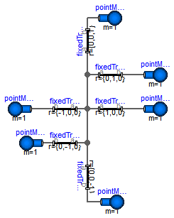
In order to compare the results of the "PointMass" example where 6 point masses are rigidly connected together, in this comparision model, an equivalent system is setup, with the only difference that the point masses are replaced by Bodies with zero inertia.
model SystemWithStandardBodies
"For comparison purposes, an equivalent model with Bodies instead of PointMasses"
model PointMass = Modelica.Mechanics.MultiBody.Parts.Body(m=1,I_11=0,I_22=0,I_33=0)
"Body used all places of the comparision model with zero inertia tensor";
PointMass pointMass1(
r_0(start={3,0,0}, fixed=true),
v_0(start={0,0,-1}, fixed=true),
angles_fixed=true,
w_0_fixed=true,
r_CM={0,0,0});
PointMass pointMass2(r_CM={0,0,0});
PointMass pointMass3(r_CM={0,0,0});
PointMass pointMass4(r_CM={0,0,0});
PointMass pointMass5(r_CM={0,0,0});
PointMass pointMass6(r_CM={0,0,0});
Modelica.Mechanics.MultiBody.Parts.FixedTranslation fixedTranslation( r={1,0,0});
Modelica.Mechanics.MultiBody.Parts.FixedTranslation fixedTranslation1( r={-1,0,0});
Modelica.Mechanics.MultiBody.Parts.FixedTranslation fixedTranslation2( r={0,1,0});
Modelica.Mechanics.MultiBody.Parts.FixedTranslation fixedTranslation3( r={0,-1,0});
Modelica.Mechanics.MultiBody.Parts.FixedTranslation fixedTranslation4( r={0,0,1});
Modelica.Mechanics.MultiBody.Parts.FixedTranslation fixedTranslation5( r={0,0,-1});
equation
connect(fixedTranslation1.frame_a, fixedTranslation.frame_a);
connect(fixedTranslation1.frame_a, fixedTranslation2.frame_a);
connect(fixedTranslation3.frame_a, fixedTranslation.frame_a);
connect(fixedTranslation1.frame_a, fixedTranslation4.frame_a);
connect(fixedTranslation5.frame_a, fixedTranslation.frame_a);
connect(fixedTranslation2.frame_b, pointMass3.frame_a);
connect(fixedTranslation3.frame_b, pointMass4.frame_a);
connect(pointMass5.frame_a, fixedTranslation4.frame_b);
connect(fixedTranslation5.frame_b, pointMass6.frame_a);
connect(fixedTranslation.frame_b, pointMass1.frame_a);
connect(fixedTranslation1.frame_b, pointMass2.frame_a);
end SystemWithStandardBodies;
 Modelica.Mechanics.MultiBody.Examples.Elementary.PointGravityWithPointMasses2.SystemWithStandardBodies.PointMass
Modelica.Mechanics.MultiBody.Examples.Elementary.PointGravityWithPointMasses2.SystemWithStandardBodies.PointMass

| Type | Name | Default | Description |
|---|---|---|---|
| Boolean | animation | true | = true, if animation shall be enabled (show cylinder and sphere) |
| Position | r_CM[3] | Vector from frame_a to center of mass, resolved in frame_a [m] | |
| Mass | m | 1 | Mass of rigid body [kg] |
| Inertia tensor (resolved in center of mass, parallel to frame_a) | |||
| Inertia | I_11 | 0 | (1,1) element of inertia tensor [kg.m2] |
| Inertia | I_22 | 0 | (2,2) element of inertia tensor [kg.m2] |
| Inertia | I_33 | 0 | (3,3) element of inertia tensor [kg.m2] |
| Inertia | I_21 | 0 | (2,1) element of inertia tensor [kg.m2] |
| Inertia | I_31 | 0 | (3,1) element of inertia tensor [kg.m2] |
| Inertia | I_32 | 0 | (3,2) element of inertia tensor [kg.m2] |
| Initialization | |||
| Position | r_0.start[3] | {0,0,0} | Position vector from origin of world frame to origin of frame_a [m] |
| Velocity | v_0.start[3] | {0,0,0} | Absolute velocity of frame_a, resolved in world frame (= der(r_0)) [m/s] |
| Acceleration | a_0.start[3] | {0,0,0} | Absolute acceleration of frame_a resolved in world frame (= der(v_0)) [m/s2] |
| Boolean | angles_fixed | false | = true, if angles_start are used as initial values, else as guess values |
| Angle | angles_start[3] | {0,0,0} | Initial values of angles to rotate frame_a around 'sequence_start' axes into frame_b [rad] |
| RotationSequence | sequence_start | {1,2,3} | Sequence of rotations to rotate frame_a into frame_b at initial time |
| Boolean | w_0_fixed | false | = true, if w_0_start are used as initial values, else as guess values |
| AngularVelocity | w_0_start[3] | {0,0,0} | Initial or guess values of angular velocity of frame_a resolved in world frame [rad/s] |
| Boolean | z_0_fixed | false | = true, if z_0_start are used as initial values, else as guess values |
| AngularAcceleration | z_0_start[3] | {0,0,0} | Initial values of angular acceleration z_0 = der(w_0) [rad/s2] |
| Animation | |||
| if animation = true | |||
| Diameter | sphereDiameter | world.defaultBodyDiameter | Diameter of sphere [m] |
| Color | sphereColor | Modelica.Mechanics.MultiBody... | Color of sphere |
| Diameter | cylinderDiameter | sphereDiameter/Types.Default... | Diameter of cylinder [m] |
| Color | cylinderColor | sphereColor | Color of cylinder |
| SpecularCoefficient | specularCoefficient | world.defaultSpecularCoeffic... | Reflection of ambient light (= 0: light is completely absorbed) |
| Advanced | |||
| Boolean | enforceStates | false | = true, if absolute variables of body object shall be used as states (StateSelect.always) |
| Boolean | useQuaternions | true | = true, if quaternions shall be used as potential states otherwise use 3 angles as potential states |
| RotationSequence | sequence_angleStates | {1,2,3} | Sequence of rotations to rotate world frame into frame_a around the 3 angles used as potential states |
| Type | Name | Description |
|---|---|---|
| Frame_a | frame_a | Coordinate system fixed at body |
model PointMass = Modelica.Mechanics.MultiBody.Parts.Body(m=1,I_11=0,I_22=0,I_33=0) "Body used all places of the comparision model with zero inertia tensor";